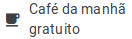

Sobre o hotel
O Hotel Luar do Sertão está localizado no Sertão Central do estado do Ceará, na cidade de Quixadá.
Com mais de trinta anos oferecendo serviços de qualidade para clientes da região, de fora do estado e até
mesmo
de outros países, o Hotel Luar do Sertão tem a honra de ser considerado 5 estrelas pelas maiores avaliadoras
de hotéis do Brasil.
Atualmente, possuímos 30 quartos à disposição de nossos clientes, sendo eles dividos igualmente entre três
tipos
de suítes: Luxo, Premium e Presidencial. Aceitamos diversas formas de pagamento, além de realizarmos
promoções para
grupos
e instituições. Como brinde para nossos clientes, oferecemos café da manhã, wifi e estacionamentos
gratuitos. Também
se destacam nossas áreas de lazer, como a piscina e salão de jogos.

Atrativos da região
Quixadá é uma cidade histórica, conhecida pelas suas construções, seu relevo e por ter sido abrigo
para a importante escritora brasileira Rachel de Queiroz.
Um dos mais visitados pontos turísticos da cidade é o Açude do Cedro , construído nos
primeiros anos da república Brasileira, após o reinado de D. Pedro II.
Outro ponto bastante visitado é a Pedra da
Galinha Choca,
sendo palco para aventureiros que se põem a escalá-la.
Além disso, Quixadá possui alguns museus, como o Museu Histórico Jacinto de
Sousa,
o Memorial
Rachel de Queiroz,
a Casa de Saberes Cego Aderaldo - que
fornece aulas de dança, música, pintura, entre outras manifestações artísticas,
abriga exposições e promove eventos culturais. Outro lugar bastante visitado é o
Santuário Nossa Senhora Imaculada Rainha do Sertão.
Quixadá também possui diversas atrações para quem gosta de aventuras, como a Pista de Voo Livre, localizada
próxima ao Santuário, as trilhas pelo Cedro, as Pedras que
as pessoas costumam escalar para admirar a paisagem da cidade, entre outras.